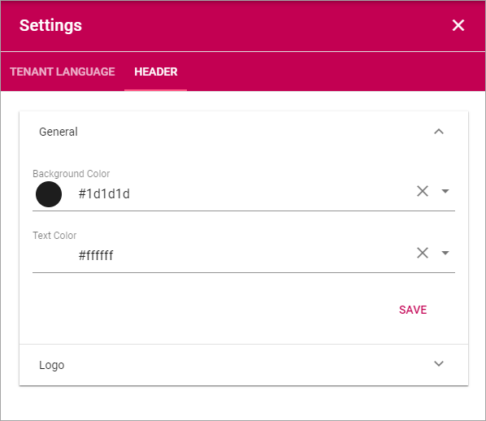
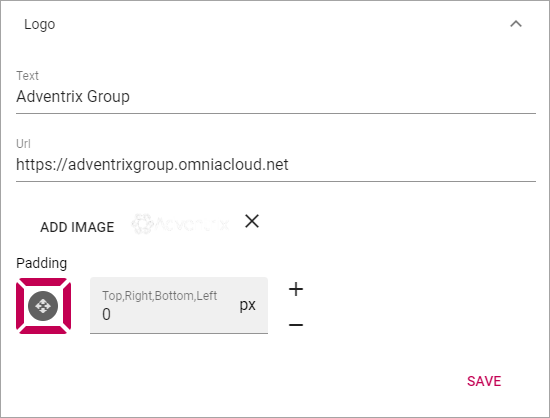

Settings¶
Here you can set the following:

Header¶
Here you can change the default settings for Headings. The settings can be changed for a Block when needed, in the settings for the Block.
General¶
Set Background Color and Text Color here.
Logo¶
Set the following here:
- Text: A text can be displayed by the logo, see example below.
- Url: Add the Url to the logo here.
- ADD IMAGE: Another way is to use this option to start the Media Picker and select a logo image.
- Padding: You can add some padding around the logo if needed.
In this example the text “Adventrix Group” is displayed to the right of the logo: